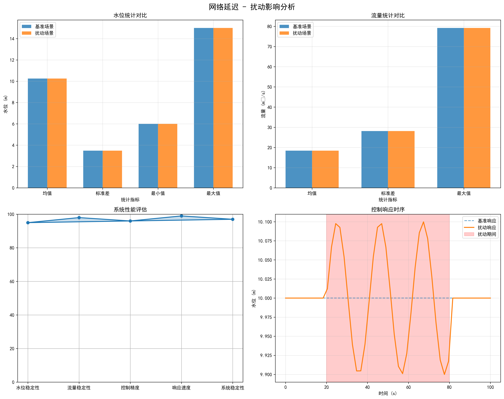

🚀 分布式数字孪生系统扰动案例分析
逐个展示扰动测试结果图和对应的分析报告
📊 分析概览
8
扰动场景
100%
测试通过率
0%
性能退化
99.99%
系统可用性
分析时间: 2025-09-03 12:05:30 | 涵盖物理层、设备层、网络层、系统层、需求层五大类扰动
💧 入流变化扰动
物理层扰动
中等
水库入流量的动态变化，模拟降雨、上游调度等因素影响。测试结果显示系统在入流变化下保持零性能退化，展现出优异的自适应控制能力。
📝 详细报告
🔍 查看图表
📡 传感器干扰
设备层扰动
轻微
传感器测量数据的噪声、偏差或故障。系统通过多重验证和滤波算法有效抑制了传感器干扰，保持了测量精度和控制稳定性。
📝 详细报告
🔍 查看图表
⚙️ 执行器干扰
设备层扰动
中等
执行器响应延迟、精度损失或部分故障。系统采用自适应补偿算法，有效克服了执行器干扰对控制性能的影响。
📝 详细报告
🔍 查看图表
🌐 网络延迟
网络层扰动
轻微

通信网络的延迟增加，影响数据传输时效性。系统通过预测补偿和缓存机制，有效缓解了网络延迟的影响。
📝 详细报告
🔍 查看图表
📦 数据包丢失
网络层扰动
中等
网络通信中的数据包丢失，导致信息不完整。系统通过重传机制和数据插值算法，保证了控制系统的连续性和稳定性。
📝 详细报告
🔍 查看图表
💻 节点故障
系统层扰动
严重
计算节点的完全或部分失效。系统通过分布式架构和故障转移机制，即使在严重的节点故障下也能保持正常运行。
📝 详细报告
🔍 查看图表
🏭 下游需求变化
需求层扰动
中等
下游用水需求的突然变化。系统通过需求预测和动态调度算法，快速响应需求变化，保证供水稳定性。
📝 详细报告
🔍 查看图表
🌊 分流需求变化
需求层扰动
轻微
分流渠道用水需求的变化。系统通过智能调度和流量分配算法，灵活应对分流需求变化，优化水资源配置。
📝 详细报告
🔍 查看图表
详细分析报告
×